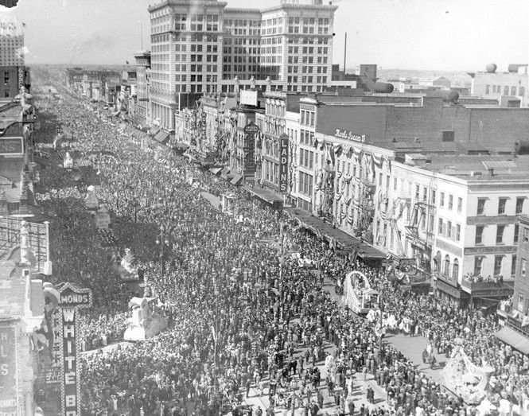

The holiday of Mardi Gras is celebrated in all of Louisiana, including the city of New Orleans. Celebrations are concentrated for about two weeks before and through Shrove Tuesday, the day before Ash Wednesday (the start of lent in the Western Christian tradition). Usually there is one major parade each day (weather permitting); many days have several large parades. The largest and most elaborate parades take place the last five days of the Mardi Gras season. In the final week, many events occur throughout New Orleans and surrounding communities, including parades and balls (some of them masquerade balls).
The parades in New Orleans are organized by social clubs known as krewes; most follow the same parade schedule and route each year. The earliest-established krewes were the Mistick Krewe of Comus, the earliest, Rex, the Knights of Momus and the Krewe of Proteus. Several modern "super krewes" are well known for holding large parades and events, such as the Krewe of Endymion (which is best known for naming celebrities as grand marshals for their parades), the Krewe of Bacchus (similarly known for naming celebrities as their Kings), as well as the Zulu Social Aid & Pleasure Club—a predominantly African American krewe. Float riders traditionally toss throws into the crowds. The most common throws are strings of colorful plastic beads, doubloons, decorated plastic "throw cups", Moon Pies, and small inexpensive toys. Major krewes follow the same parade schedule and route each year.
While many tourists center their Carnival season activities on Bourbon Street, major parades originate in the Uptown and Mid-City districts and follow a route along St. Charles Avenue and Canal Street, on the upriver side of the French Quarter. Walking parades - most notably the Krewe du Vieux and Chewbacchus - also take place downtown in the Faubourg Marigny and French Quarter in the weekends preceding Mardi Gras day. Mardi Gras day traditionally concludes with the "Meeting of the Courts" between Rex and Comus.
In countries such as the United Kingdom, Mardi Gras is also known as Shrove Tuesday, which is derived from the word shrive, meaning "to administer the sacrament of confession to; to absolve"
Some think Mardi Gras may be linked with the ancient Roman pagan celebrations of spring and fertility such as Saturnalia, which dates back to 133–31 BC. This celebration honored the god of agriculture, Saturn. It was observed in mid-December, before the sowing of winter crops. It was a week-long festival when work and business came to a halt. Schools and courts of law closed, and the normal social patterns were suspended.
On the Julian calendar, which the Romans used at the time, the winter solstice fell on December 25. Hence, the celebration gradually became associated with Christmas.
The first record of Mardi Gras being celebrated in Louisiana was at the mouth of the Mississippi River in what is now lower Plaquemines Parish, Louisiana, on March 2, 1699. Iberville, Bienville, and their men celebrated it as part of an observance of Catholic practice. The date of the first celebration of the festivities in New Orleans is unknown. A 1730 account by Marc-Antoine Caillot celebrating with music and dance, masking and costuming (including cross-dressing). Excerpt | A Company Man - The Book An account from 1743 that the custom of Carnival balls was already established. Processions and wearing of masks in the streets on Mardi Gras took place. They were sometimes prohibited by law, and were quickly renewed whenever such restrictions were lifted or enforcement waned. In 1833 Bernard Xavier de Marigny de Mandeville, a rich plantation owner of French descent, raised money to fund an official Mardi Gras celebration. James R. Creecy in his book Scenes in the South, and Other Miscellaneous Pieces describes New Orleans Mardi Gras in 1835:[2] Shrove Tuesday is a day to be remembered by strangers in New Orleans, for that is the day for fun, frolic, and comic masquerading. All of the mischief of the city is alive and wide awake in active operation. Men and boys, women and girls, bond and free, white and black, yellow and brown, exert themselves to invent and appear in grotesque, quizzical, diabolic, horrible, strange masks, and disguises. Human bodies are seen with heads of beasts and birds, beasts and birds with human heads; demi-beasts, demi-fishes, snakes' heads and bodies with arms of apes; man-bats from the moon; mermaids; satyrs, beggars, monks, and robbers parade and march on foot, on horseback, in wagons, carts, coaches, cars, &c., in rich confusion, up and down the streets, wildly shouting, singing, laughing, drumming, fiddling, fifeing, and all throwing flour broadcast as they wend their reckless way. In 1856 21 businessmen gathered at a club room in the French Quarter to organize a secret society to observe Mardi Gras with a formal parade. They founded New Orleans' first and oldest krewe, the Mystick Krewe of Comus. According to one historian, "Comus was aggressively English in its celebration of what New Orleans had always considered a French festival. It is hard to think of a clearer assertion than this parade that the lead in the holiday had passed from French-speakers to Anglo-Americans. ... To a certain extent, Americans 'Americanized' New Orleans and its Creoles. To a certain extent, New Orleans 'creolized' the Americans. Thus the wonder of Anglo-Americans boasting of how their business prowess helped them construct a more elaborate version than was traditional. The lead in organized Carnival passed from Creole to American just as political and economic power did over the course of the nineteenth century. The spectacle of Creole-American Carnival, with Americans using Carnival forms to compete with Creoles in the ballrooms and on the streets, represents the creation of a New Orleans culture neither entirely Creole nor entirely American."[3] In 1875 Louisiana declared Mardi Gras a legal state holiday.[4] War, economic, political, and weather conditions sometimes led to cancellation of some or all major parades, especially during the American Civil War, World War I and World War II, but the city has always celebrated Carnival.[4] In 1979 the New Orleans police department went on strike. The official parades were canceled or moved to surrounding communities, such as Jefferson Parish, Louisiana. Significantly fewer tourists than usual came to the city. Masking, costuming, and celebrations continued anyway, with National Guard troops maintaining order. Guardsmen prevented crimes against persons or property but made no attempt to enforce laws regulating morality or drug use; for these reasons, some in the French Quarter bohemian community recall 1979 as the city's best Mardi Gras ever. In 1991 the New Orleans City Council passed an ordinance that required social organizations, including Mardi Gras Krewes, to certify publicly that they did not discriminate on the basis of race, religion, gender or sexual orientation, to obtain parade permits and other public licenses.[5] Shortly after the law was passed, the city demanded that these krewes provide them with membership lists, contrary to the long-standing traditions of secrecy and the distinctly private nature of these groups. In protest—and because the city claimed the parade gave it jurisdiction to demand otherwise-private membership lists—the 19th-century krewes Comus and Momus stopped parading.[6] Proteus did parade in the 1992 Carnival season but also suspended its parade for a time, returning to the parade schedule in 2000. Several organizations brought suit against the city, challenging the law as unconstitutional. Two federal courts later declared that the ordinance was an unconstitutional infringement on First Amendment rights of free association, and an unwarranted intrusion on the privacy of the groups subject to the ordinance.[7] The US Supreme Court refused to hear the city's appeal from this decision. Today, New Orleans krewes operate under a business structure; membership is open to anyone who pays dues, and any member can have a place on a parade float.
In 1704, Mobile established a secret society (Masque de la Mobile), similar to those that form our current Mardi Gras krewes. It lasted until 1709. In 1710, the "Boeuf Gras Society" was formed and paraded from 1711 through 1861. The procession was held with a huge bull's head pushed along on wheels by 16 men. Later, Rex would parade with an actual bull, draped in white and signaling the coming Lenten meat fast. This occurred on Fat Tuesday. New Orleans was established in 1718 by Bienville. By the 1730s, Mardi Gras was celebrated openly in New Orleans, but not with the parades we know today. In the early 1740s, Louisiana's governor, the Marquis de Vaudreuil, established elegant society balls, which became the model for the New Orleans Mardi Gras balls of today.
The earliest reference to Mardi Gras "Carnival" appears in a 1781 report to the Spanish colonial governing body. That year, the Perseverance Benevolent & Mutual Aid Association was the first of hundreds of clubs and carnival organizations formed in New Orleans. By the late 1830s, New Orleans held street processions of maskers with carriages and horseback riders to celebrate Mardi Gras. Dazzling gaslight torches, or "flambeaux," lit the way for the krewe's members and lent each event an exciting air of romance and festivity. In 1856, six young Mobile natives formed the Mistick Krewe of Comus, invoking John Milton's hero Comus to represent their organization. Comus brought magic and mystery to New Orleans with dazzling floats (known as tableaux cars) and masked balls. Krewe members remained anonymous.
Mardi Gras is about music, parades, picnics, floats and excitement. It's one big holiday in New Orleans! Revelers know to wear costumes or at least dress in purple, green, and gold, and adorn themselves with long beads caught from the floats of previous parades. You'll see a lot of crazy costumes, kids with their families are everywhere, and both locals and visitors having a great time. Parade goers will sit on the ground, throw balls, play music, eat great food and watch the crowds walk by between parades. On Mardi Gras day, the majority of non-essential businesses are shut down because of the celebration. Experienced revelers know to bring a large bag with them so they can haul away all the beads and trinkets they will catch from the parades! Every year, we get a lot of questions about how it all begin, and how the traditions have changed. Click on the buttons below to find out the answers to some of the most frequently asked questions.
As Mayor of the great City of New Orleans, I invite you to visit our city to experience the excitement of Mardi Gras!
The Carnival season officially begins each year on Jan. 6 -- the Feast of the Epiphany, also called Twelfth Night or Kings’ Day. Traditional balls are held in the weeks leading up to the big event.
Spectacular parades with colorful, creative floats start rolling before Mardi Gras Day. Our private Carnival clubs, called krewes, take on royalty status and throw beads, doubloons and toys to parade goers. Visitors quickly learn to say, "Throw me something mister!"
The culmination of Mardi Gras in New Orleans begins early on Mardi Gras Day when the Zulu Social Aid & Pleasure Club and the Rex Organization parade through the city. Music, food and elaborate costumes add to the fun-filled day of excitement for revelers of all ages.
New Orleans, with its unmatched culture and world-famous music and cuisine, is an exciting place to be at any time of the year. We invite everyone to experience Mardi Gras at least once in their lifetime. Make your plans now to be a part of this great tradition and see firsthand why we say, "Laissez les bon temps rouler!"
sincerely,
Mayor of New Orleans
LaToya Cantrell (née Wilder; born April 3, 1972) is an American politician serving as the Mayor of New Orleans, Louisiana since May 7, 2018. A Democrat, Cantrell is the first woman to hold the office. Before becoming mayor, Cantrell represented District B on the New Orleans City Council from 2012–2018
Cantrell was born as LaToya Wilder in Los Angeles. She moved to New Orleans in 1990 to attend Xavier University of Louisiana, where she earned a BA in sociology. She attended an executive training program at the Harvard Kennedy School.
Cantrell returned to New Orleans in 1999, settling in the Broadmoor neighborhood. In 2003, she joined the board of the Broadmoor Improvement Association and became president of the association in 2004. After the 2005 levee failures in Greater New Orleans following Hurricane Katrina, the Broadmoor neighborhood flooded severely and remained mostly deserted for months afterward. In early 2006, the Bring New Orleans Back Commission, a blue-ribbon panel convened by then-mayor Ray Nagin, released a recovery plan that called for Broadmoor and five other New Orleans neighborhoods to be converted into greenspace. In her role as president of the association, Cantrell worked with residents and local religious leaders to organize opposition to the panel's recommendation. She also helped enlist returning Broadmoor residents in a six-month effort to write a recovery plan for the neighborhood. Cantrell worked full time to implement Broadmoor's recovery plan from 2006 through 2012. She and fellow residents formed the Broadmoor School Board, overseeing the reopening and renovation of the Andrew H. Wilson school. She served as a founding board member of the Broadmoor Development Corporation, a community development corporation that provided case management and other social services for returning residents. She was involved with residents' efforts to reopen Broadmoor's Rosa F. Keller Library, which won a $2 million grant from the Carnegie Endowment. She created a partnership between the Broadmoor Improvement Association and Church of the Annunciation, which provided the neighborhood association with office space and hosted volunteer groups. She also formed a partnership between the Broadmoor Improvement Association and her home parish, Blessed Trinity Catholic Church, to open the Broadmoor Art and Wellness Center.
In 2012, Cantrell declared her candidacy for the New Orleans City Council seat vacated when former District B representative Stacy Head won an election to an at-large position. After the November election, candidate Dana Kaplan and Cantrell advanced to a December runoff, which Cantrell won with 54 percent of the vote. Cantrell served out the balance of Head's term, and was unopposed for a full four-year term in 2014. As a council member, Cantrell focused on health, housing, and criminal-justice issues. She introduced a bill banning smoking at restaurants and bars within New Orleans, citing the health effects of secondhand smoke on service industry workers. The council unanimously passed the bill in 2015. Also in 2015, Cantrell began work to open a low-barrier homeless shelter, a move that was objected to by residents because of its proposed placement in Central City, New Orleans. Instead, the shelter was moved to the downtown site of the former VA Hospital. In 2017, Cantrell introduced legislation with at-large council member Jason Williams to register and inspect rental units in the city. As a member of the Criminal Justice Committee, Cantrell has participated in efforts to install crime cameras in her district, assess the effectiveness of citywide anti-gun-violence campaigns, and address understaffing at the New Orleans Police Department